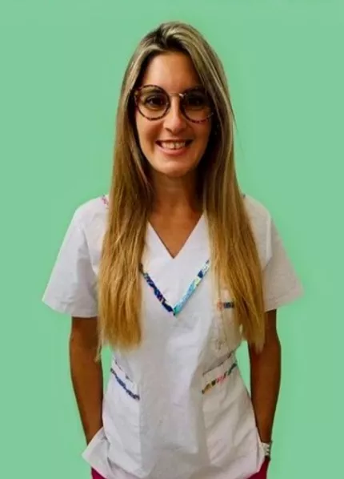
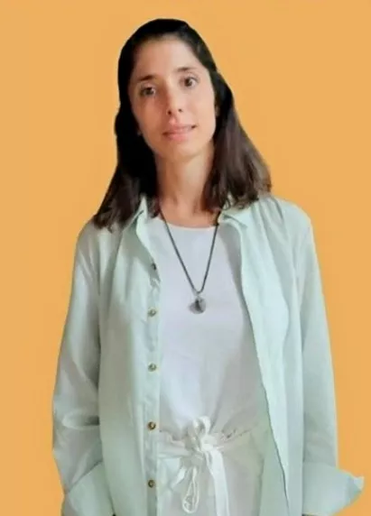
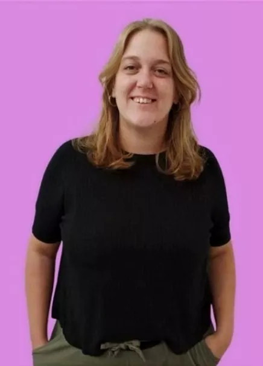
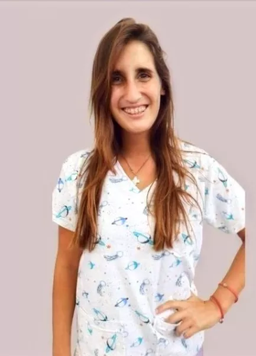
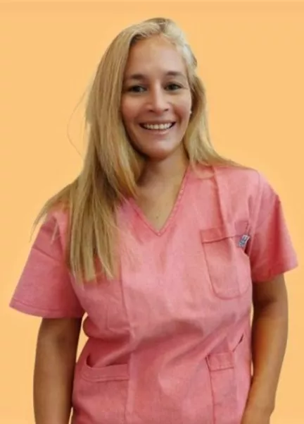

Galería
LIC. PILAR ANDRIN - Lic. en Psicología. - Lic. en Psicopedagogía. - Prof. en Psicopedagogía. - Especializada en Neurodesarrollo. - Especializada en Evaluaciones Neurocognitivas. - Diplomada en Autismo. - Certificada en ADI-R y ADOS-2.
LIC. ANTONELLA CENTENO - Lic. en Psicopedagogía. - Prof. en Psicopedagogía. - Especializada en Neurodesarrollo. - Diplomada en Autismo. - Diagnóstico y Tratamiento en la Primera Infancia. - Evaluaciones Neurocognitivas
PS. EMILIA GARRINI - Psicóloga. - Especializada en niños y atención Temprana. - Orientación Familiar.
LIC. MELINA EISENACK - Lic. en Fonoaudiología. - Especializada en Neurolingüística. - Diagnóstico y tratamientos en niños.
LIC. MARIA SOL FERRERO - Lic. En Terapia Ocupacional. - Especializada en Integración Sensorial. - Especializada en Control Neuromotor según Brondo.
PS. DAIANA RUCKERT - Psicóloga. - Especializada en Clínica de niños. - Orientación Familiar.